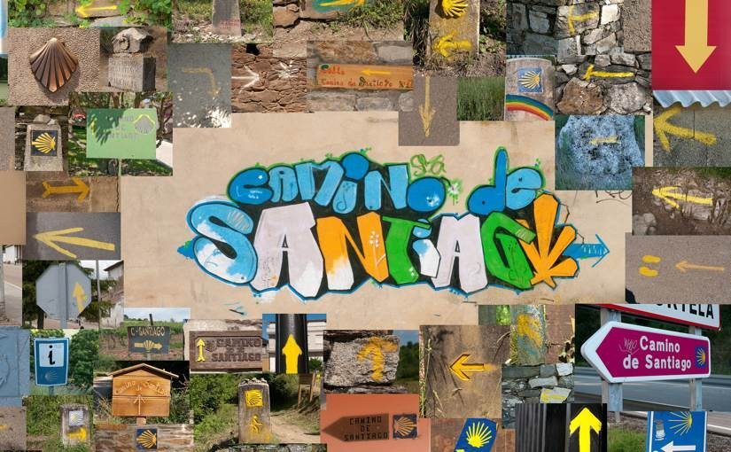

Project: “Camino de Santiago” book
"Camino de Santiago" means "Way of St James". It is a network of paths through Europe that all lead to Santiago de Compostella. In June 2010 I set off with camera to walk the last 500 miles from St-Jean-pied-de-port in France. This is the book that I made along the way.
The book consists of 30 landscape photos presented with snapshots of the pilgrims and their lifestyle.
View El Camino Frances on google maps.
LIKE! Could you give me a short insight of how your workflow looks like?
I know how to convert my Garmin tracks to a KML file, do you insert pics and videos in GE and can export them at once as a KML to GMap, upload the files to a hoster like Picasa and add the links manually later on, please enlighten me :)
Geo big map is an awesome plugin, thanks!
Hi Richard,
Oops, I lost your comment and didn’t reply for ages. Here it is:
My workflow is very simple. No GPS equipment. I just took pictures during the day, then each evening I uploaded a picture to flickr and placed it in a google map manually, using the “My Maps” feature (On the flickr photo page, go to “Embed” then copy the HTML. Create a new pin in the Google Maps interface, set the text box mode to HTML and paste the photo HTML in).
Bernie :o)
hey,
i started learning html at w3 schools from scratch and i found your better animation in 2008 and it looked like magic to me.
just what i wanted to be able to, too.
On my lonely pelgrimage i learned to do the same in javascript but now I noticed
jQuery which saves lots of work.
I also learned the gimp that s nice too.
Now, I have a better understanding and want to have a closer look at your animation.
I still have some questions for you so please reply to me ;).
paul